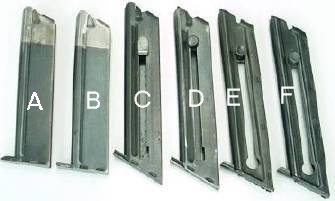

|
MAGAZINE
COMPATIBILITY |
M A G A Z I N E T Y P E
|
||||||
|
1st Series Match Target |
1st Series Woodsman |
2nd Series Woodsman |
Challenger |
3rd Series (Early) |
3rd Series (Late) |
||
|
M O D E L |
First Series Woodsman |
Yes | Yes | No | No | No | No |
|
Second Series Woodsman |
No | No | Yes | No | Yes | No | |
|
Challenger Second Series |
No | No | Yes | Yes | Yes | Yes | |
|
Third Series (All Models) |
No | No | Yes | Yes | Yes | Yes | |
| Photo Key |
A
|
B
|
C
|
D
|
E
|
F
|
|
|
 |
||||
|
|
|
|
|
|
NOTE 1: The pre-WWII magazines were two-toned until about 1939 or 1940. After that they were solid blue, but otherwise identical to the previous version. The factory parts replacement magazines are ALSO solid blue, but the floor plate on them is marked differently.
NOTE 2: These photos are intended to illustrate interchangeability of magazines. They do NOT represent all the minor variations that do not affect function, such as floor plate markings, type of follower used, etc.
Key to photos:
A and B: Pre-WWII (First series) magazines. The only differences are in the floor plate. As the photo shows, the leading edge of the floor plate of magazine A, the Match Target magazine, is sloped forward from top to bottom, so as to facilitate removal when the gun is fitted with extended "Elephant Ear" stocks. The floor plate on other pre-WWII magazines is also sloped, but in the opposite direction: ie., in an aft direction from top to bottom. Only the Match Target magazine has MATCH TARGET markings on the bottom.
C and D: Second Series magazines. The small cut in the right hand side of the Woodsman magazine (C) is for the push button magazine catch of the second series Woodsman. The Challenger magazine (D) has no cut, since it has its magazine catch at the butt.
E and F: Early Third Series magazines (E) had the cut on the right hand side to make them backward compatible with the second series type magazine catch. Later third series magazines (F) dropped that feature, although it is easy to add the cut to the later magazines.